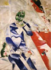

|
 |
Chagall
August 28 - October 24, 1999
Galleries 242 and 243
This exhibition is a focused representation of Chagall’s early work as a painter and later as a printmaker. It is also a fine example of how the museum and its visitors benefit when works of art are loaned to other institutions. All of the masterpieces that were loaned to the Institute for this event are coming from either the Guggenheim Museum, the Philadelphia Museum of Art or The Centre Georges Pompidou in exchange for loans made to those museums in recent years. The Institute’s own Chagall painting, Poet with Birds, will also be displayed.
Chagall’s inspired printmaking skills can be seen in approximately 20 works on paper, all drawn from the Institute’s collection, including Paravent, a large four-panel color lithograph.
Exhibition support for Chagall is provided by the law firm of Robins, Kaplan, Miller and Ciresi.